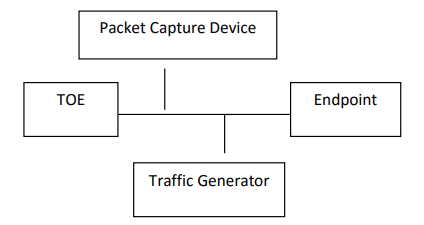

If the
TOE boundary includes a general-purpose operating system or mobile device, the evaluator
shall examine the
TSS to ensure that it describes whether the
IPsec functionality is
architecturally integrated with the
TOE itself or whether it is a separate executable that
is bundled with the
TOE.
Guidance
The evaluator shall ensure that the operational guidance contains any appropriate information for ensuring
that the
IPsec implementation can be properly configured.
Tests
As a prerequisite for performing the Test EAs for the individual
FCS_IPSEC_EXT.1 elements below, the
evaluator must do the following:
The evaluator must create a test environment consisting of at least the components illustrated
below. It is expected that the traffic generator will be used to construct network packets and will provide the
evaluator with the ability manipulate fields in the ICMP, IPv4, IPv6,
UDP, and TCP packet headers. The
evaluator shall provide justification for any differences in the test environment.

Figure 1:
Test Environment
Note that the evaluator shall perform all tests using the
TOE and a representative sample of
platforms listed in the
ST (for TOEs that claim to support multiple platforms).
The evaluator shall examine the
TSS and determine that it describes how the
IPsec functionality is
implemented.
The evaluator shall ensure that the
TSS identifies any platform functionality the
TSF relies upon to support
its
IPsec implementation, if any (e.g. does it invoke cryptographic primitive functions from the platform’s
cryptographic library, enforcement of packet routing decisions by low-level network drivers).
The evaluator shall ensure that the
TSS describes how the
IPsec implementation interacts
with the network stack of the platforms on which it can run (e.g., does the client insert itself within the
stack via kernel modifications, does the
IPsec implementation simply invoke APIs to gain access to network services).
The evaluator shall ensure that the
TSS describes how the
SPD is implemented and the rules for processing
both inbound and outbound packets in terms of the
IPsec policy. The
TSS describes the rules that are
available and the resulting actions available after matching a rule. The
TSS describes how the available
rules and actions form the
SPD using terms defined in
[RFC 4301] such as BYPASS (e.g., no encryption),
DISCARD (e.g., drop the packet), and PROTECT (e.g., encrypt the packet).
As noted in section 4.4.1 of
[RFC 4301], the processing of entries in the
SPD is non-trivial and the evaluator
shall determine that the description in the
TSS is sufficient to determine which rules will be applied given
the rule structure implemented by the
TOE. For example, if the
TOE allows specification of ranges,
conditional rules, etc., the evaluator shall determine that the description of rule processing (for both
inbound and outbound packets) is sufficient to determine the action that will be applied, especially in the
case where two different rules may apply. This description shall cover both the initial packets (that is, no
SA is established on the interface or for that particular packet) as well as packets that are part of an
established
SA.
Guidance
The evaluator shall examine the operational guidance to verify that it describes how the
SPD is created and
configured. If there is an administrative interface to the
IPsec implementation, then the guidance describes how the
administrator specifies rules for processing a packet. The description includes all three cases - a rule that
ensures packets are encrypted/decrypted, dropped, and allowing a packet to flow in plaintext. The
evaluator shall determine that the description in the operational guidance is consistent with the
description in the
TSS, and that the level of detail in the operational guidance is sufficient to allow the
administrator to set up the
SPD in an unambiguous fashion. This includes a discussion of how ordering of
rules impacts the processing of an IP packet.
If the
IPsec implementation is configured by an external application, such as a
VPN gateway, then the operational
guidance should indicate this and provide a description of how
IPsec is configured by the external
application. The description should contain information as to how the
SPD is established and set up in an
unambiguous fashion. The description should also include what is configurable via the external
application, how ordering of entries may be expressed, as well as the impacts that ordering of entries may
have on the packet processing.
In either case, the evaluator ensures the description provided In the
TSS is consistent with the capabilities
and description provided in the operational guidance.
Tests
Depending on the implementation, the evaluator may be required to use a
VPN gateway or some form of
application to configure the client. For Test 2, the evaluator is required to choose an application that
allows for the configuration of the full set of capabilities of the
IPsec implementation.
For example, if the
IPsec implementation supports specification of wildcards, subnets, etc., it is unacceptable
for the evaluator to specify only a single fully qualified IP address in the rule.
The evaluator shall perform the following tests:
- Test 1: The evaluator shall configure an SPD that is capable of the following: dropping a
packet, encrypting a packet, and allowing a packet to flow in plaintext. The selectors used in the
construction of the rule shall be different such that the evaluator can generate a packet and send packets
to the IPsec endpoint with the appropriate fields (fields that are used by the rule - e.g., the IP addresses, TCP/UDP
ports) in the packet header. The evaluator performs both positive and negative test cases for each type
of rule. The evaluator observes via the audit trail, and packet captures that the TOE exhibited the expected
behavior: appropriate packets were dropped, allowed through without modification, were encrypted by
the IPsec implementation.
- Test 2: The evaluator shall devise several tests that cover a variety of scenarios for packet processing.
These scenarios must exercise the range of possibilities for SPD entries and processing modes as outlined
in the TSS and operational guidance. Potential areas to cover include rules with overlapping ranges and
conflicting entries, inbound and outbound packets, and packets that establish SAs as well as packets that
belong to established SAs. The evaluator shall verify, via the audit trail and packet captures, for each
scenario that the expected behavior is exhibited, and is consistent with both the TSS and the operational
guidance.
The evaluator shall check the
TSS to ensure it states that
IPsec can be established to operate
in tunnel mode or transport mode or both (as selected).
Guidance
The evaluator shall confirm that the operational guidance contains instructions on how to
configure the connection for each mode selected.
If both transport mode and tunnel mode are implemented, the evaluator shall review the operational
guidance to determine how the use of a given mode is specified.
Tests
The evaluator shall perform the following tests based on the selections chosen:
- Test 1: [conditional] If tunnel mode is selected, the evaluator uses the operational guidance to
configure the TOE to operate in tunnel mode and also configures a VPN gateway to operate in tunnel
mode. The evaluator configures the TOE and the VPN gateway to use any of the allowable cryptographic algorithms,
authentication methods, etc. to ensure an allowable SA can be negotiated. The evaluator shall then
initiate a connection from the TOE to connect to the VPN gateway peer. The evaluator observes (for example,
in the audit trail and the captured packets) that a successful connection was established using tunnel
mode.
- Test 2: [conditional] If transport mode is selected, the evaluator uses the operational guidance to
configure the TOE to operate in transport mode and also configures an IPsec peer to accept IPsec
connections using transport mode. The evaluator configures the TOE and the endpoint device to use any
of the allowed cryptographic algorithms, authentication methods, etc. to ensure an allowable SA can be
negotiated. The evaluator then initiates a connection from the TOE to connect to the remote endpoint.
The evaluator observes (for example, in the audit trail and the captured packets) that a successful
connection was established using the transport mode.
- Test 3: [conditional] If both tunnel mode and transport mode are selected, the evaluator shall modify the
testing for FCS_IPSEC_EXT.1 to include the supported mode for SPD PROTECT entries to show that they
apply only to traffic that is transmitted or received using the indicated mode.
The evaluator shall examine the
TSS to verify that the
TSS provides a description of how a packet is
processed against the
SPD and that if no “rules” are found to match, that a final rule exists, either implicitly
or explicitly, that causes the network packet to be discarded.
Guidance
The evaluator shall check that the operational guidance provides instructions on how to construct or
acquire the
SPD and uses the guidance to configure the
TOE for the following test.
Tests
The evaluator shall configure the
SPD such that it has entries that contain operations that DISCARD,
PROTECT, and (if applicable) BYPASS network packets. The evaluator may use the
SPD that was created
for verification of
FCS_IPSEC_EXT.1.1. The evaluator shall construct a network packet that matches a
BYPASS entry and send that packet. The evaluator should observe that the network packet is passed to
the proper destination interface with no modification. The evaluator shall then modify a field in the packet
header; such that it no longer matches the evaluator-created entries (there may be a “
TOE-created” final
entry that discards packets that do not match any previous entries). The evaluator sends the packet, and
observes that the packet was not permitted to flow to any of the
TOE’s interfaces.
The evaluator shall examine the
TSS to verify that the algorithms AES-GCM-128 and AES-GCM-256 are
implemented. If the
ST author has selected either AES-CBC-128 or AES-CBC-256 in the requirement,
then the evaluator verifies the
TSS describes these as well. In addition, if either CBC mode is selected,
the evaluator must ensure that the SHA-based HMAC algorithm conforms to the algorithms specified in the
relevant iteration of
FCS_COP.1 from the incorporating
PP that applies to keyed-hash message authentication
(often
FCS_COP.1/KeyedHash or
FCS_COP.1/HMAC).
Guidance
The evaluator checks the operational guidance to ensure it provides instructions on how the
TOE is
configured to use the algorithms selected in this component and whether this is performed through direct
configuration, defined during initial installation, or defined by acquiring configuration settings from an
environmental component.
Tests
The evaluator shall configure the
TOE as indicated in the operational guidance configuring the
TOE
to using each of the AES-GCM-128 and AES-GCM-256 algorithms, and attempt to establish a connection
using
ESP. If the
ST Author has selected either AES-CBC-128 or AES-CBC-256, the
TOE is configured to use
those algorithms and the evaluator attempts to establish a connection using
ESP for those algorithms
selected.
The evaluator shall examine the
TSS to verify that IKEv1 or IKEv2 (or both) are implemented. If IKEv1 is
implemented, the evaluator shall verify that the
TSS indicates whether or not
XAUTH is supported, and
that aggressive mode is not used for IKEv1 Phase 1 exchanges (i.e. only main mode is used). It may be that
these are configurable options.
Guidance
The evaluator shall check the operational guidance to ensure it instructs the administrator how to
configure the
TOE to use IKEv1 or IKEv2 (as selected), and uses the guidance to configure the
TOE to
perform NAT traversal for the test below. If
XAUTH is implemented, the evaluator shall verify that the
operational guidance provides instructions on how it is enabled or disabled.
If the
TOE supports IKEv1, the evaluator shall verify that the operational guidance either asserts that only
main mode is used for Phase 1 exchanges, or provides instructions for disabling aggressive mode.
Tests
- Test 1: [conditional] If NAT traversal is supported, the evaluator shall configure the TOE so that it will
perform NAT traversal processing as described in the TSS and [RFC 7296], section 2.23.
The evaluator shall initiate an IPsec connection and determine that
the NAT is successfully traversed. If the TOE supports IKEv1 with or without XAUTH, the evaluator shall
verify that this test can be successfully repeated with XAUTH enabled and disabled in the manner specified
by the operational guidance. If the TOE supports only IKEv1 with XAUTH, the evaluator shall verify that
connections not using XAUTH are unsuccessful. If the TOE supports only IKEv1 without XAUTH, the
evaluator shall verify that connections using XAUTH are unsuccessful.
- Test 2: [conditional] If the TOE supports IKEv1, the evaluator shall perform any applicable operational
guidance steps to disable the use of aggressive mode and then attempt to establish a connection using an
IKEv1 Phase 1 connection in aggressive mode. This attempt should fail. The evaluator shall show that the
TOE rejects a VPN gateway from initiating an IKEv1 Phase 1 connection in aggressive mode. The
evaluator should then show that main mode exchanges are supported.
The evaluator shall ensure the
TSS identifies the algorithms used for encrypting the IKEv1 or IKEv2
payload, and that the algorithms AES-CBC-128, AES-CBC-256 are specified, and if others are chosen in the
selection of the requirement, those are included in the
TSS discussion.
Guidance
The evaluator checks the operational guidance to ensure it provides instructions on how the
TOE is
configured to use the algorithms selected in this component and whether this is performed through direct
configuration, defined during initial installation, or defined by acquiring configuration settings from an
environmental component.
Tests
The evaluator shall use the operational guidance to configure the
TOE (or to configure the Operational
Environment to have the
TOE receive configuration) to perform the following test for each ciphersuite
selected for each version of
IKE selected:
The evaluator shall configure the
TOE to use the ciphersuite under test to encrypt the IKEv1 or
IKEv2 payload and establish a connection with a peer device, which is configured to accept the
payload encrypted only using the indicated ciphersuite. The evaluator will confirm the algorithm was that used
in the negotiation. The evaluator will confirm that the connection is successful by confirming that data
can be passed through the connection once it is established. For example, the evaluator may connect to
a webpage on the remote network and verify that it can be reached.
There are no
TSS EAs for this requirement.
Guidance
The evaluator shall check the operational guidance to ensure it provides instructions on how the
TOE
configures the values for
SA lifetimes. In addition, the evaluator shall check that the guidance has the
option for either the Administrator or
VPN gateway to configure Phase 1 SAs if time-based limits are
supported. Currently there are no values mandated for the number of packets or number of bytes, the
evaluator shall simply check the operational guidance to ensure that this can be configured if selected in
the requirement.
Tests
When testing this functionality, the evaluator needs to ensure that both
IPsec endpoints are configured
appropriately. From the RFC: “A difference between IKEv1 and IKEv2 is that in IKEv1
SA lifetimes were
negotiated. In IKEv2, each end of the
SA is responsible for enforcing its own lifetime policy on the
SA and
rekeying the
SA when necessary. If the two ends have different lifetime policies, the end with the shorter
lifetime will end up always being the one to request the rekeying. If the two ends have the same lifetime
policies, it is possible that both will initiate a rekeying at the same time (which will result in redundant
SAs). To reduce the probability of this happening, the timing of rekeying requests SHOULD be jittered.”
Each of the following tests shall be performed for each version of
IKE selected in the
FCS_IPSEC_EXT.1.5
protocol selection:
Each of the following tests shall be performed for each version of
IKE selected in the
FCS_IPSEC_EXT.1.5 protocol selection:
- Test 1: The evaluator shall configure a maximum lifetime in terms of the number of packets (or
bytes) allowed following the operational guidance. The evaluator shall establish an SA and determine that
once the allowed number of packets (or bytes) through this SA is exceeded, the connection is closed.
- Test 2: The evaluator shall construct a test where a Phase 1 SA is established and attempted
to be maintained for more than 24 hours before it is renegotiated. The evaluator shall observe that this
SA is closed or renegotiated in 24 hours or less. If such an action requires that the TOE be configured in a
specific way, the evaluator shall implement tests demonstrating that the configuration capability of the
TOE works as documented in the operational guidance.
- Test 3: The evaluator shall perform a test similar to Test 2 for Phase 2 SAs, except that the
lifetime will be 8 hours or less instead of 24 hours or less.
- Test 4: If a fixed limit for IKEv1 SAs is supported, the evaluator shall establish an SA and
observe that the connection is closed after the fixed traffic or time value is reached.
The evaluator shall check to ensure that the DH groups specified in the requirement are listed as being
supported in the
TSS. If there is more than one DH group supported, the evaluator checks to ensure the
TSS describes how a particular DH group is specified/negotiated with a peer.
Guidance
There are no AGD EAs for this requirement.
Tests
The evaluator shall perform the following test:
For each supported DH group, the evaluator shall test to ensure that all supported
IKE
protocols can be successfully completed using that particular DH group.
The evaluator shall check to ensure that, for each DH group supported, the
TSS describes the
process for generating "x." The evaluator shall verify that the
TSS
indicates that the random number generated meets the requirements of this
FP,
and that the length of "x" meets the stipulations in the requirement.
Guidance
There are no AGD EAs for this requirement.
Tests
There are no test EAs for this requirement.
The evaluator shall check to ensure that, for all nonces generated for use in
IKE,
the
TSS describes the process for generating nonces. The evaluator shall verify that the
TSS
indicates that the random number generated meets the requirements of this
FP,
and that the length of the nonce meets the stipulations in the requirement.
The evaluator ensures that the
TSS identifies RSA or ECDSA or both as being used to perform peer
authentication.
The evaluator shall ensure that the
TSS describes how the
TOE compares the peer’s presented identifier
to the reference identifier. This description shall include whether the certificate presented identifier is
compared to the ID payload presented identifier, which fields of the certificate are used as the presented
identifier (
DN, Common Name, or SAN) and, if multiple fields are supported, the logical order comparison.
If the
ST author assigned an additional identifier type, the
TSS description shall also include a description
of that type and the method by which that type is compared to the peer’s presented certificate.
If any selection with pre-shared keys is chosen in the selection, the evaluator shall check to ensure that the
TSS describes
how those selections work in conjunction with authentication of
IPsec connections.
Guidance
If any selection with “
Pre-shared Keys” is selected, the evaluator shall check that the operational guidance
describes any configuration necessary to enable any selected authentication mechanisms.
If any method other than "
no other method" is selected, the evaluator shall check that the operational guidance
describes any configuration necessary to enable any selected authentication mechanisms.
The evaluator ensures the operational guidance describes how to set up the
TOE to use the cryptographic
algorithms RSA or ECDSA, as selected.
In order to construct the environment and configure the
TOE for the following tests, the evaluator will
ensure that the operational guidance also describes how to configure the
TOE to connect to a trusted CA,
and ensure a valid certificate for that CA is loaded into the
TOE as a trusted CA.
The evaluator shall also ensure that the operational guidance includes the configuration of the reference
identifiers for the peer.
Tests
The following tests shall be repeated for each certificate-based peer authentication method supported:
- Test 1: The evaluator shall have the TOE generate a public-private key pair, and submit a CSR (Certificate
Signing Request) to a CA (trusted by both the TOE and the peer VPN used to establish a connection) for
its signature. The values for the DN (Common Name, Organization, Organizational Unit, and Country) will
also be passed in the request. Alternatively, the evaluator may import to the TOE a previously generated
private key and corresponding certificate.
- Test 2: The evaluator shall configure the TOE to use a private key and associated certificate signed by a
trusted CA and shall establish an IPsec connection with the peer.
- Test 3: The evaluator shall test that the TOE can properly handle revoked certificates – conditional on
whether CRL or OCSP is selected in FIA_X509_EXT.1; if both are selected, and then a test
is performed for each method. The evaluator shall ensure that a
valid certificate is used, and that the SA is established. The evaluator then attempts the test with a
certificate that will be revoked (for each method chosen in the selection) to ensure when the certificate
is no longer valid that the TOE will not establish an SA
- Test 4: [conditional] For each selection made, the evaluator shall verify factors are required, as indicated in the
operational guidance, to establish an IPsec connection with the server.
For each supported identifier type (excluding DNs), the evaluator shall repeat the following tests:
- Test 5: For each field of the certificate supported for comparison, the evaluator shall configure the peer’s
reference identifier on the TOE (per the administrative guidance) to match the field in the peer’s
presented certificate and shall verify that the IKE authentication succeeds.
- Test 6: For each field of the certificate support for comparison, the evaluator shall configure the peer’s
reference identifier on the TOE (per the administrative guidance) to not match the field in the peer’s
presented certificate and shall verify that the IKE authentication fails.
The following tests are conditional:
- Test 7: [conditional] If, according to the TSS, the TOE supports both Common Name and SAN certificate
fields and uses the preferred logic outlined in the Application Note, the tests above with the Common
Name field shall be performed using peer certificates with no SAN extension. Additionally, the evaluator
shall configure the peer’s reference identifier on the TOE to not match the SAN in the peer’s presented
certificate but to match the Common Name in the peer’s presented certificate, and verify that the IKE
authentication fails.
- Test 8: [conditional] If the TOE supports DN identifier types, the evaluator shall configure the peer's
reference identifier on the TOE (per the administrative guidance) to match the subject DN in the peer's
presented certificate and shall verify that the IKE authentication succeeds. To demonstrate a bit-wise
comparison of the DN, the evaluator shall change a single bit in the DN (preferably, in an Object Identifier
(OID) in the DN) and verify that the IKE authentication fails. To demonstrate a comparison of DN values,
the evaluator shall change any one of the four DN values and verify that the IKE authentication fails.
- Test 9: [conditional] If the TOE supports both IPv4 and IPv6 and supports IP address identifier types, the
evaluator must repeat test 1 and 2 with both IPv4 address identifiers and IPv6 identifiers. Additionally,
the evaluator shall verify that the TOE verifies that the IP header matches the identifiers by setting the
presented identifiers and the reference identifier with the same IP address that differs from the actual IP
address of the peer in the IP headers and verifying that the IKE authentication fails.
- Test 10: [conditional] If, according to the TSS, the TOE performs comparisons between the peer’s ID
payload and the peer’s certificate, the evaluator shall repeat the following test for each combination of
supported identifier types and supported certificate fields (as above). The evaluator shall configure the
peer to present a different ID payload than the field in the peer’s presented certificate and verify that the
TOE fails to authenticate the IKE peer.
The evaluator shall perform the following tests if Pre-Shared key-based peer authentication is implemented:
- Test 1: Not sure what to do here.
EAs for this element are tested through EAs for
FCS_IPSEC_EXT.1.11.
The evaluator shall check that the
TSS describes the potential strengths (in terms of the number of bits in
the symmetric key) of the algorithms that are allowed for the
IKE and
ESP exchanges. The
TSS shall also
describe the checks that are done when negotiating IKEv1 Phase 2 and IKEv2 CHILD_SA suites to ensure
that the strength (in terms of the number of bits of key in the symmetric algorithm) of the negotiated
algorithm is less than or equal to that of the
IKE SA negotiation that is being protected.
Guidance
There are no AGD EAs for this requirement.
Tests
The evaluator follows the guidance to configure the
TOE to perform the following tests for each version
of
IKE supported:
- Test 1: The evaluator shall successfully negotiate an IPsec connection using each of the supported algorithms
and hash functions identified in the requirements.
- Test 2: The evaluator shall attempt to establish an SA for ESP that selects an encryption algorithm with
greater strength than that being used for the IKE SA (i.e., symmetric algorithm with a key size larger
than that being used for the IKE SA). Such attempts should fail.
- Test 3: The evaluator shall attempt to establish an IKE SA using an algorithm that is not one of the supported
algorithms and hash functions identified in the requirements. Such an attempt should fail.
- Test 4: The evaluator shall attempt to establish an SA for ESP (assumes the proper parameters where used to
establish the IKE SA) that selects an encryption algorithm that is not identified in FCS_IPSEC_EXT.1.4.
Such an attempt should fail.